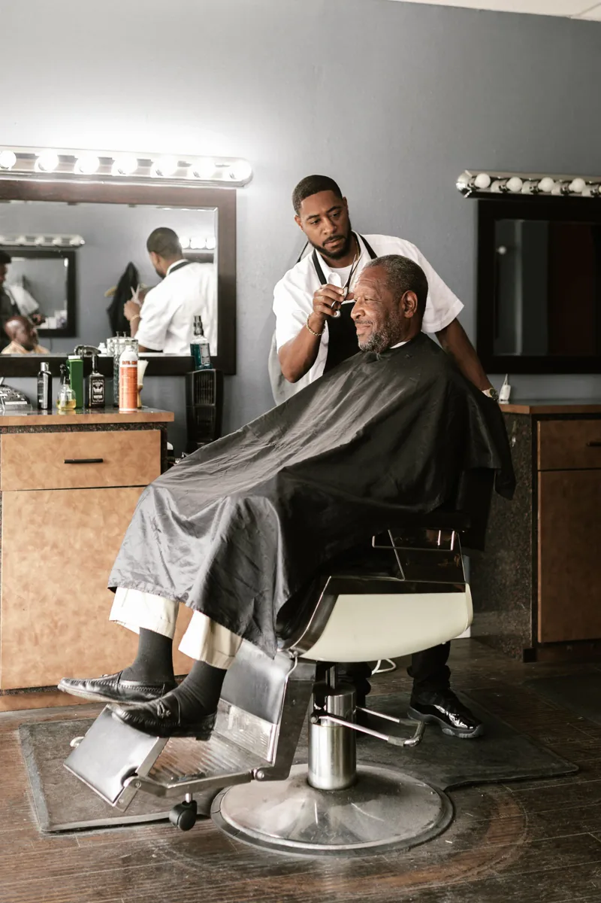
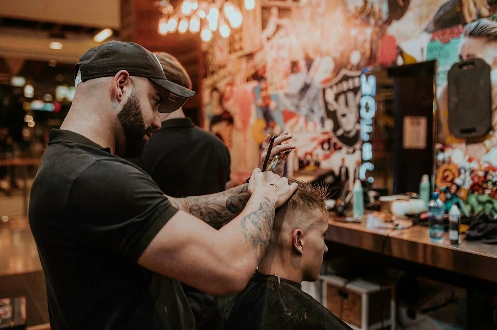
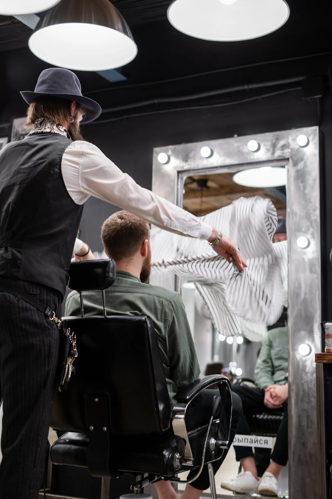
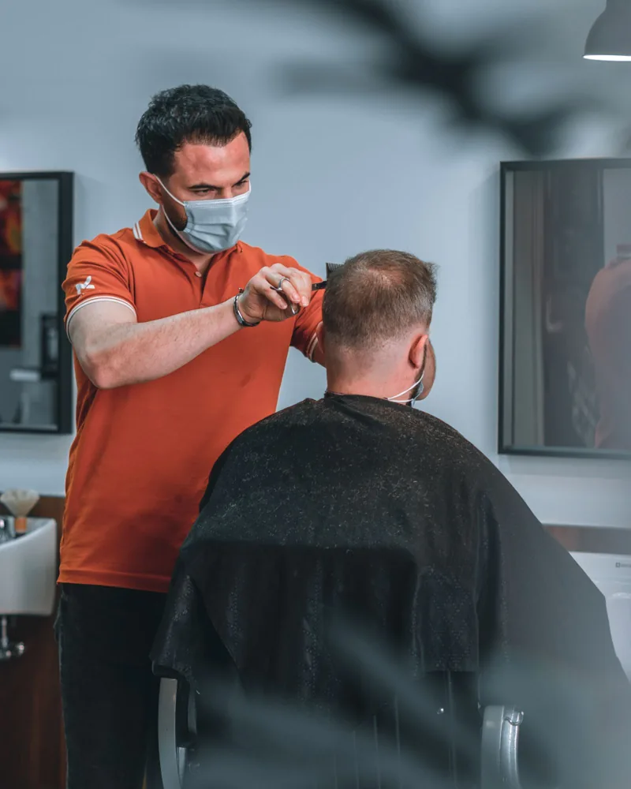
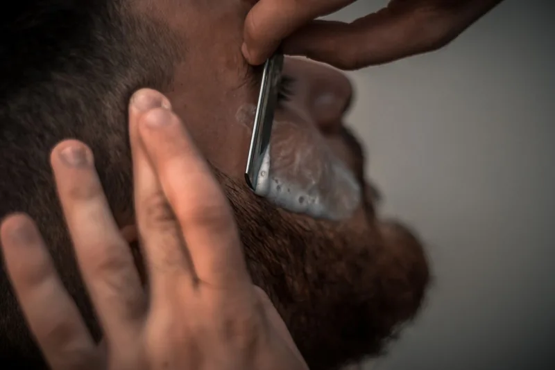
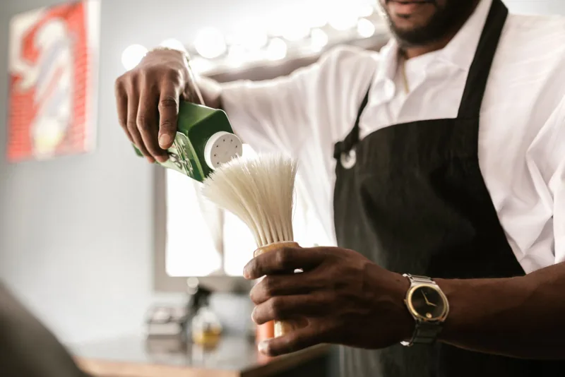
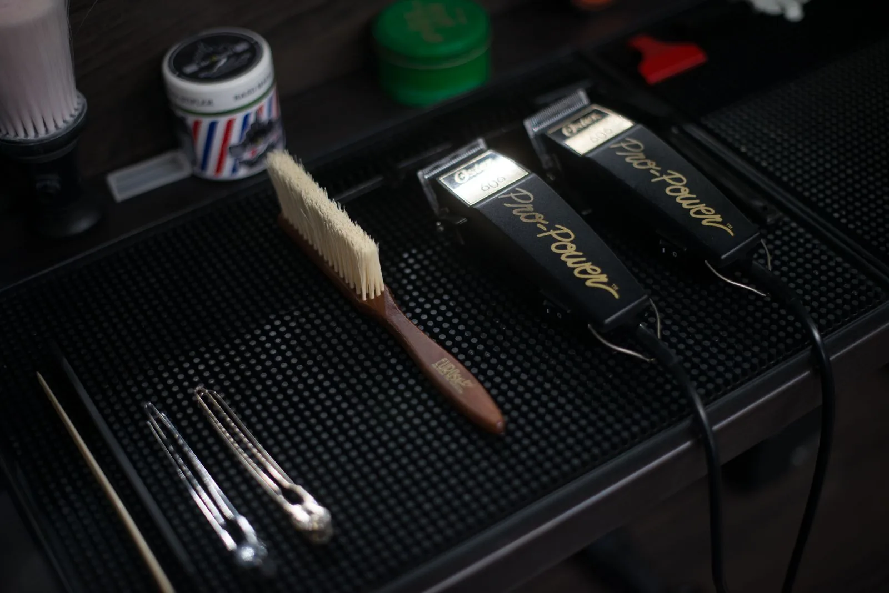

The Classic Cut
Scissor work, clean lines and a styled finish — the everyday cut, tailored to you.
£25 · 30 min

Beverley · East Riding · Since 2019
Modern and traditional barbering on Northbar Within — skin fades, classic cuts, beard sculpting and cut-throat shaves, done the way you like them.
Yorkshire's Best New Barbers 2021England's Best New Barbers 2021
Yorkshire's Best Barbers 2022Booksy award listings
Book in advanceThrough the Booksy app — no queue
Gift vouchersAvailable in store
The shop
Fraternity Barbers is styled with excellent customer service, a welcoming atmosphere and modern features to keep clients comfortable. Book in advance through the Booksy app, walk in, and sit down at your time — no waiting in line.
Barbers Ash and Ollie lead a team known for fades, classic cuts and beard work, and for remembering how you like it. High-quality styling and grooming products are available to buy in store, so the finish you leave with is one you can keep.
“Been a long time customer of ash' and never been disappointed.” — Harvey, Booksy review

19 Northbar Within, Beverley
Services
Six services, each booked to the chair so your barber has time to finish the job properly. Prices on request for shaves and combinations.

Scissor work, clean lines and a styled finish — the everyday cut, tailored to you.
£25 · 30 min

Skin, taper, burst or drop fades, blended tight and finished sharp.
£27 · 30 min

The traditional cut-throat shave, with hot towels and a close, comfortable finish.
In the £15–£45 range

Beard trim and shape — lines cleaned up, length kept where it suits you.
£15
Boys' skin fades and haircuts, with the patience first-timers need.
£22 · 30 min
Restyles and cut-and-beard combinations, finished with product and a proper check in the mirror.
£15–£45 range
Scroll sideways to see all six services →
Price table
As listed on Booksy. No surprises at the till.
| Service | Time | Price |
|---|---|---|
| Haircut | 30 min | £25 |
| Skin Fade, Taper Fade, Burst Fade, Drop Fade | 30 min | £27 |
| Boys 5–16 yrs Skin Fade, Taper Fade, Drop Fade | 30 min | £22 |
| Beard Trim | — | £15 |
Full service list and live availability on Booksy.

The fade, in focus
Skin, taper, burst and drop fades — for men and boys alike — are what Booksy reviewers mention most after the welcome itself. Blended tight, lined up clean, and finished so it still looks sharp a week later.
Book a fadeIn the chair
Why locals choose Fraternity
Regulars come back to the same barber because the cut lands the way they like it, visit after visit.
Book ahead on Booksy and walk straight to the chair — plus a good chat while you're in it.
Skin, taper, burst and drop fades are the shop's most-reviewed work, for men and boys alike.
First trims get the same care as tenth visits — reviewers recommend the shop after a single cut.
“Been going for a haircut with Ollie for sometime now, always feel welcome and have a good chat with the lad, cuts my hair just the way I like it too.” — Oscar, Booksy review · Read on Booksy
“Really good first trim with Yusuf, would definitely recommend.” — Harry, Booksy review · Read on Booksy
Booking
| Tuesday | 9am – 6pm |
| Wednesday | 9am – 6pm |
| Thursday | 9am – 7pm |
| Friday | 9am – 4pm |
| Saturday | 8am – 4pm |
| Sunday & Monday | Closed |
Hours as listed on Booksy. Open 5 days a week.
Phone: 01482 886329 · Email: ashfraternity@gmail.com
Questions
Appointments are advised and booked through the Booksy app — booking in advance means you don't wait in a queue.
19 Northbar Within, Beverley HU17 8DB — in the centre of Beverley, East Riding.
Yes — boys' skin fades and haircuts (5–16 years) are on the Booksy price list.
Yes — high-quality styling and grooming products are available for purchase in store.
Yes — gift vouchers are available from the shop.
Book now
Booking runs through Booksy — pick your service, your barber and your time. Prefer to ask something first? Send a message and the shop will reply.
Book on Booksy